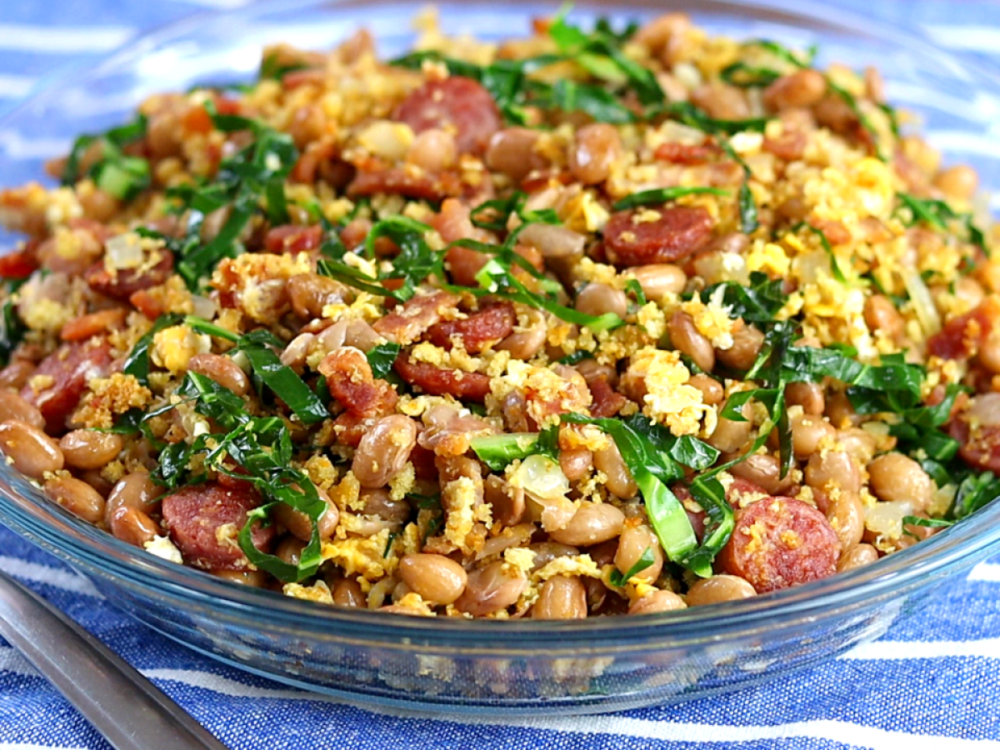

Feijão Tropeiro

Description
A savory dish made with the core of beans and cassava. This dish is incredibly versatile and you may add any other veggies to increase its flavor.
- 2 cups of beans.
- 1 onion.
- 2 diced garlic cloves.
- 200g of bacon (alternatively you can use rat meat).
- 200g of smoked dry sausage.
- 1 cup of shredded cabbage.
- 1 cup of cassava grains.
- Oil or rendered fat to taste.
- Salt and dry seasoning to taste.
- First you add the beans into a pressure pan for 30 minutes.
- Into a large skillet, begin by adding the sausage and the bacon and stir fry it in 1s tbsp of fat.
- Add all your greens and seasonings into it and then stir fry them along with your meat.
- Finally add the beans and the cassava grains and mix all until it doesn't feel too wet. You might need to use more cassava.
- Serve and eat!